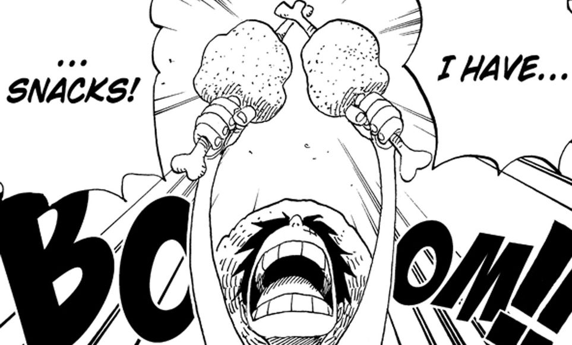

Meat on the bone

Description
The favorite food of the future pirate king. With one bite, it'll give you enough strength to conquer the seas,
take on the world government, and defeat the four yonkos!
Ingredients
- 4 Chicken drumstick
- 4 hard-boiled eggs
- 1/4 cup of breadcrumbs
- 3 tbsp. milk
Mixture (a)
- 18oz (500 g) ground chicken
- 1 tsp of salt
- Amount of black pepper based on personal preference
- 1 egg
- vegetable oil
Steps
- Make chicken drumstick "tulips."
Use kitchen scissors to cut the meat loose from the handle end of the drumstick
- Roll the meat down the bone until it is fully inside-out at the end
- Soak the breadcrumbs in milk
- Knead mixture (a) in a bowl, then add breadcrumbs and knead again
- Fold the meaty end of the drumstick around a hard-boiled egg
- If the meat doesn’t cover well enough, add cuts to loosen it up
- Oil hands lightly and cover drumstick and egg with breadcrumb mixture made in step 4
- Bake at 400°F (200°C) for 15–20 minutes, watching carefully